왼쪽이 지난 판(v2), 오른쪽이 이번 개정본(v3)입니다. 모션이 있는 화면은 GIF 를 함께 올렸습니다. 정지 캡처로는 "둥실둥실" 을 판정할 수 없기 때문입니다. 각 화면에서 선택과 메모를 남기신 뒤 상단 전체 복사 를 누르면 8화면 전부가 한 번에 클립보드로 나옵니다.
8390px 풀스크롤 전후 대조
3×캡처 배율(물리 1170px)
5모션 GIF 녹화
0워드맵 한 줄·단어 겹침
이번 판에서 고친 것 (보드 메모 8건 → D-027-A~G)
워드맵은 이제 구조적으로 한 줄이 될 수 없습니다. CSS 줄바꿈(flex-wrap)을 버리고, 단어 하나하나의 실제 크기를 재서 중심부터 타원 나선으로 좌표를 찍는 배치 엔진을 넣었습니다. 겹침 0 을 기계로 확인했고, 빈도가 높은 단어가 중심을 먼저 차지합니다. 다섯 화면 전부에 같은 엔진을 썼습니다. 한 화면만 고치면 다음 판에 되돌아오기 때문입니다.
업적은 통계에서 수집으로 바꿨습니다. 메달 실사 히어로, 집계 세 칸, 진열대 위의 메달 그리드(획득은 입체에 빛이 쓸리고, 잠김은 회색 음각에 정지). Higgsfield 로 만든 메달 자산 여덟 종을 씁니다.
해낼게 관리는 다섯 군데를 손봤습니다. 푸터 제거, 로그아웃을 계정 블록 한 곳으로, 알림 토글을 한 카드 두 행으로, 목표 상세 관리 진입 신설, 커버를 실사 사진으로.
공개 목표는 제목 끝 "해낼게" 를 브랜드 색으로 분리하고(실배포 GoalCard 규칙 그대로), 본문 끝에 떠 있던 신고를 상단 더보기 안으로 넣었습니다. 친구 상세에는 응원 워드맵과 전체 보기를 노출했습니다.
랜딩
비회원 첫 도착. 하단탭 유지(회원 전용 탭은 잠금), 전역 푸터 없음.
지난 판 (v2)
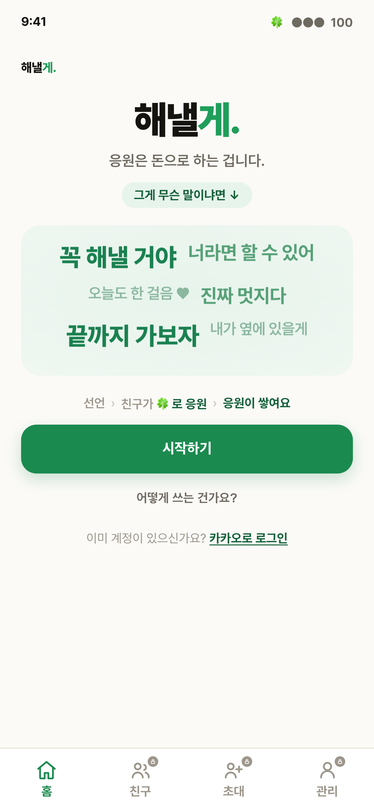
이번 개정 (v3)
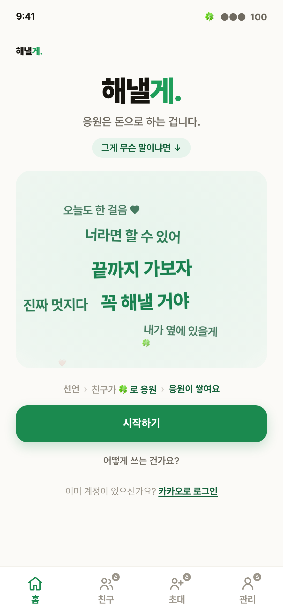
모션 (실제 녹화 · 재생되는 GIF)
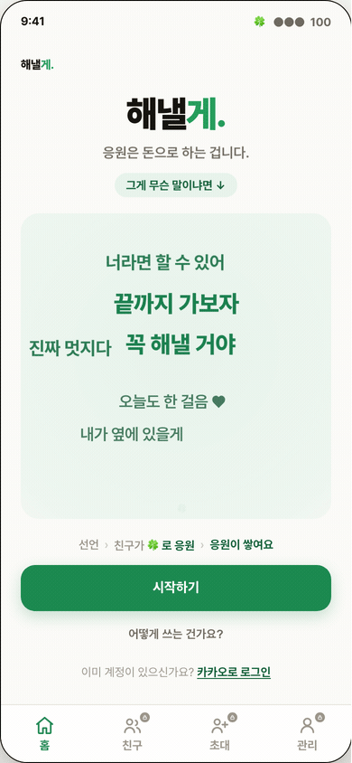
단어 착지 → 서로 다른 속도로 부유 · 하트와 클로버가 떠오름
이번 판 변경점
D-027-A 모션을 볼 수 있게 했습니다. 정지 캡처 옆에 GIF 를 함께 올립니다."동적 모션은 왜 안보여주냐? 하네스 씨발이네 이거"
D-027-E 프리뷰 워드맵을 떠다니는 배치로. 실제 유저가 남긴 문장 그대로("꼭 해낼 거야", "내가 옆에 있을게")를 서로 다른 위상으로 띄웠습니다."하트이모지 같은것도 넣고 둥실둥실 움직이게 할거지?"
공개 목표
인스타·카톡 링크로 도착하는 비회원 전환면. 금액·순위 노출 0(D-003).
지난 판 (v2)
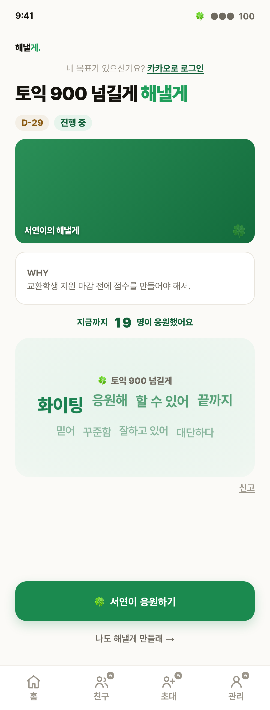
이번 개정 (v3)
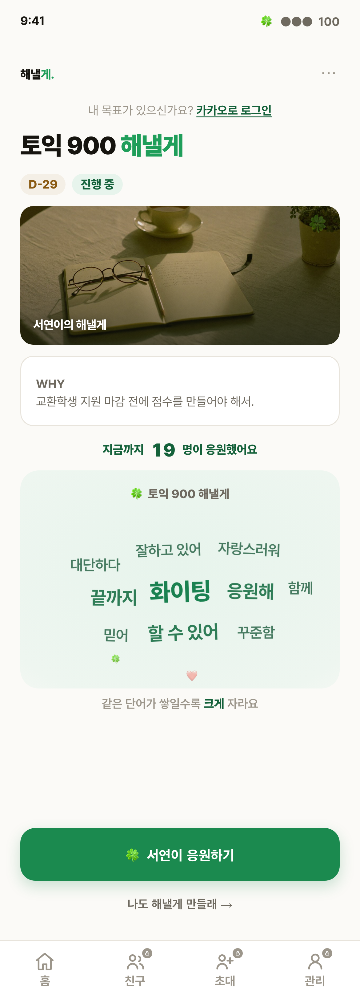
모션 (실제 녹화 · 재생되는 GIF)
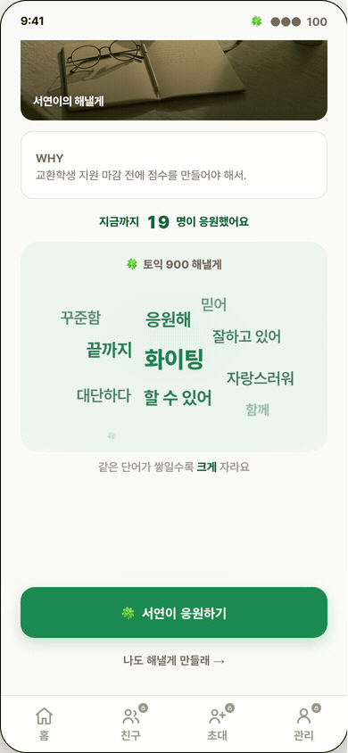
워드맵 영역으로 스크롤한 상태에서 녹화
이번 판 변경점
D-027-B 제목에서 "해낼게" 를 브랜드 색으로 강조. 실배포 GoalCard 규칙(제목 끝 "해낼게" 를 clover-bright 로 분리, 27px, 두 줄 클램프)을 그대로 따랐습니다. 샘플 제목도 "토익 900 해낼게" 로 정렬했습니다."이전 버젼에서 '토익 900 해낼게' 에서 해낼게는 다른 색으로 강조하지 않았냐"
D-027-B 신고 버튼을 상단 더보기(⋯)로. 본문 끝에 밑줄 링크로 떠 있던 신고를 없애고, 44px 버튼 + 시트(링크 복사·신고)로 묶었습니다. 본문이 제목 → 칩 → 커버 → WHY → 워드맵 으로 끊기지 않고 내려갑니다."신고 버튼 저렇게 뜬금 없이 있어서 전체적인 간격구조 씨발같네"
D-027-E 워드맵 떠다니는 배치.
해낼게 관리
회원의 최상위 관리면. 하단탭 유지이므로 전역 푸터를 깔지 않습니다(하단탭 기준 7항).
지난 판 (v2)
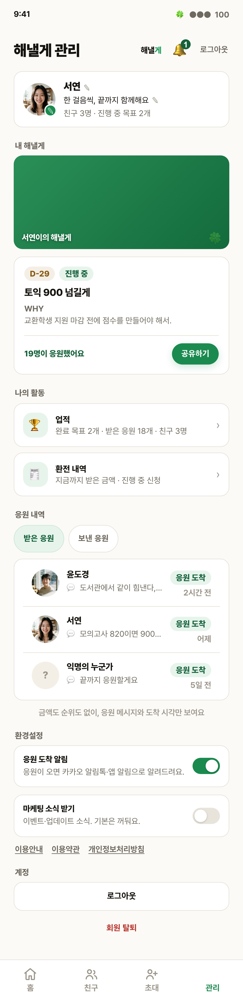
이번 개정 (v3)
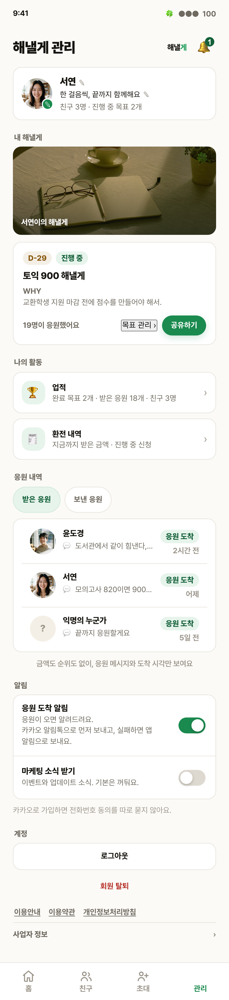
이번 판 변경점 (지적 다섯 가지 전부)
푸터를 없앴습니다. 사업자 정보는 계정 블록 아래 접힘 안으로 옮겼습니다."푸터 없앤다며? 여기엔 왜있고"
로그아웃을 계정 블록 한 곳으로. 상단 헤더에서 뺐고, 상단에는 자주 쓰는 알림만 남습니다."로그아웃은 왜 저 위치에 있꼬"
알림 토글 재설계. 카드 두 장 나열 → 한 카드 두 행. 스위치는 46×27 트랙을 44px 터치영역이 감쌉니다(role=switch)."알림 토글 버튼은 왜 저지랄이고"
목표 상세 관리 진입 신설. 관리 화면인데 목표 하나를 손볼 길이 없었습니다. 목표 카드에 "목표 관리 ›" 를 넣어 응원자 명단·편집·종료 화면으로 보냅니다."관리인데 상세관리로는 어떻게 가며"
배너 사진 교체. 단색 그라데이션 띠 → 실사 커버(아침 책상) + 하단 그라데이션 위 캡션."배너사진은 너는 저게 이쁘다고생각하냐?"
친구
응원하면 친구가 됩니다(D-024). 이번 판 변경 없음 — 지난 판 지적이 없던 화면입니다.
지난 판 (v2)
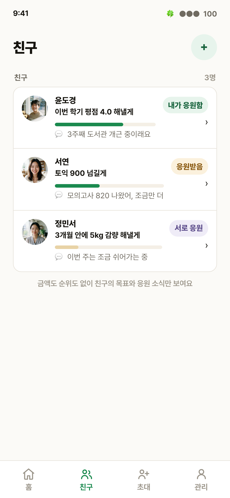
이번 개정 (v3)
이번 판 변경점
없음. 보드 메모 4번에서 선택도 메모도 없으셨고, D-026-D 관계 방향(내가 응원함 / 응원받음 / 서로 응원)은 지난 판에 이미 반영돼 있습니다. 대조를 위해 그대로 싣습니다.
친구 상세
친구 한 명의 목표와 받은 응원을 보는 화면. 하단탭 유지.
지난 판 (v2)
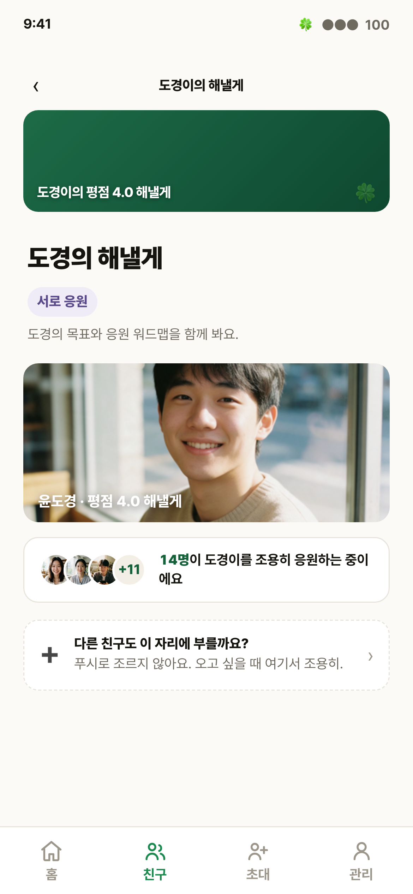
이번 개정 (v3)
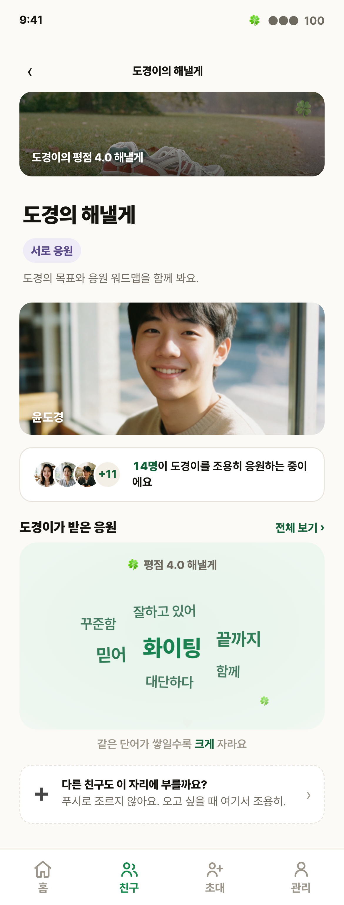
이번 판 변경점
D-027-F 응원 워드맵을 노출했습니다. 친구가 받은 응원이 이 화면에 전혀 없었습니다. "도경이가 받은 응원" 섹션과 "전체 보기 ›" 진입을 넣었습니다."응원 워드맵은 왜 안보이냐?"
커버를 실사 사진으로. 배너 지적을 같은 컴포넌트를 쓰는 이 화면에도 적용했습니다.
중복 캡션 제거. 커버 캡션과 인물 사진 캡션에 "평점 4.0 해낼게" 가 두 번 나오던 것을 한 번으로 줄였습니다.
업적
DB 집계로 반증 가능한 세 지표만 씁니다(D-022). 금액·순위는 업적에 들어가지 않습니다.
지난 판 (v2)
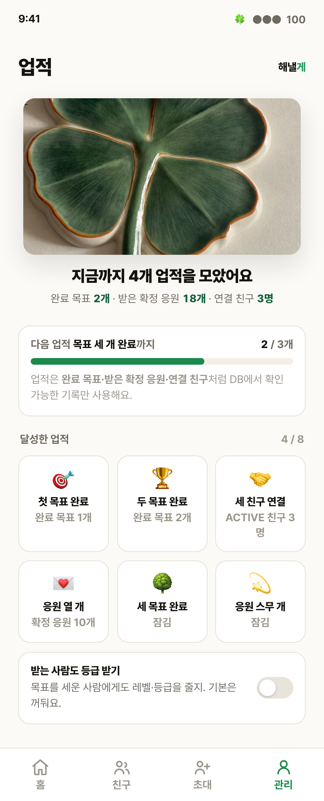
이번 개정 (v3)
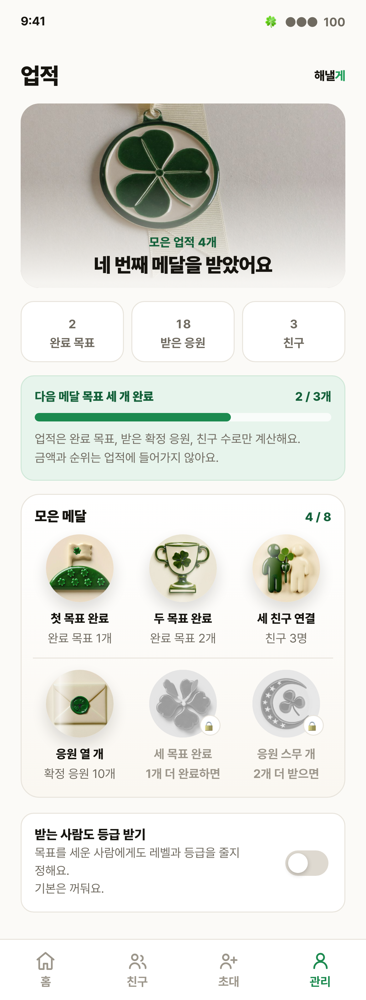
모션 (실제 녹화 · 재생되는 GIF)
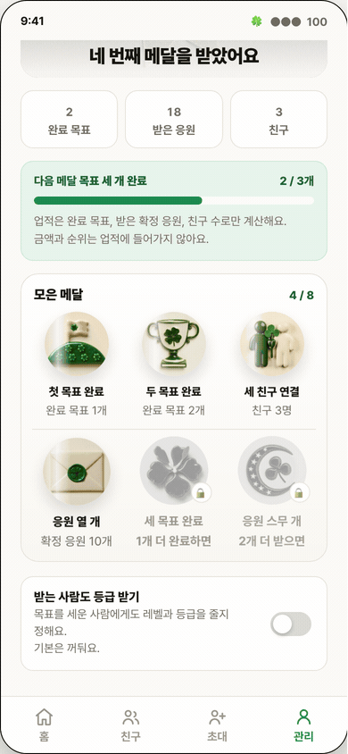
진행바 채움 · 메달 순차 등장 · 획득 메달만 빛이 쓸림(잠김은 정지)
이번 판 변경점
D-027-D 전면 재설계. 사진 한 장 + 숫자 세 줄이라 "통계" 로 읽혔습니다. 메달 히어로 → 집계 세 칸 → 진열대 수집 그리드 → 다음 메달 진행바 순서로, 화면이 "모으는 곳" 이라고 형태로 말하게 했습니다."이게 업적 화면같이 보여?"
이미지·아이콘 교체. 이모지 배지 여덟 종 → Higgsfield 메달 실사 여섯 종. 히어로도 리본 달린 클로버 메달로 바꿨습니다."사진이 너는 맞다고 보냐 이 이미지에? 아이콘 좃같은데?"
모션 추가. 히어로 등장, 메달 순차 pop, 획득 메달만 빛 쓸림 반복. 잠긴 메달은 정지라 "아직 내 것이 아님" 이 움직임으로 구분됩니다."동적모션은 어디갔고"
스위치 규격 통일. 이 화면에만 남아 있던 구형 토글을 해낼게 관리와 같은 컴포넌트로 바꿨습니다.
응원 워드맵 (전체 보기)
받은 응원 전부 표시(12개 상한 폐기, D-025-F). 하단탭 유지(D-026-H).
지난 판 (v2) — 한 줄로 눕던 배치
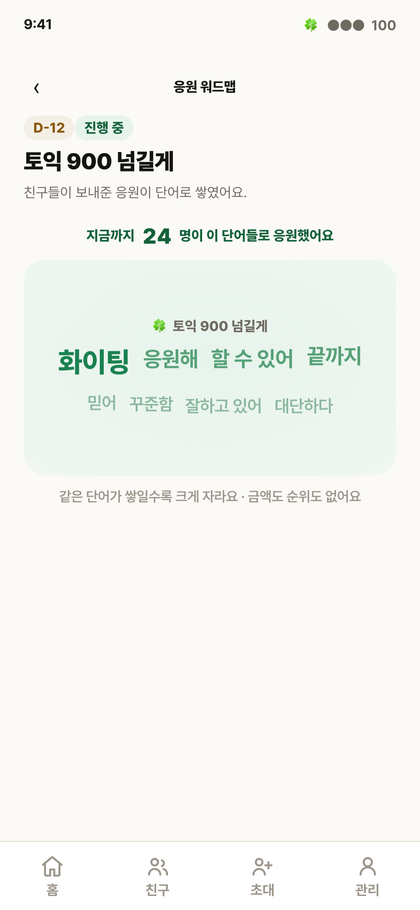
이번 개정 (v3) — 떠다니는 배치
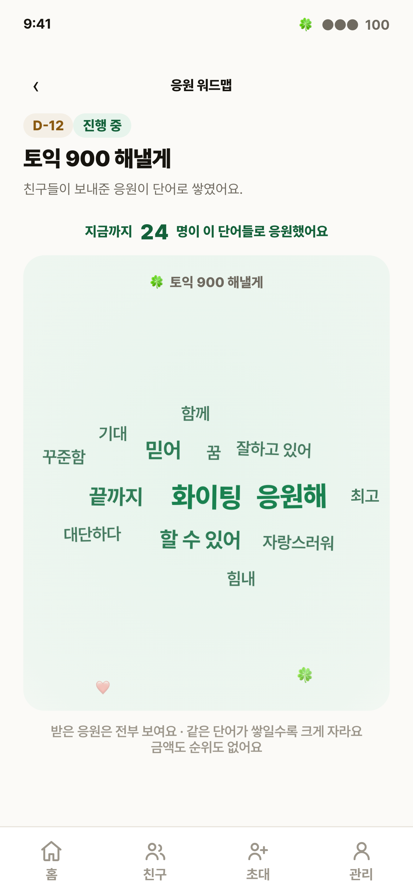
모션 (실제 녹화 · 재생되는 GIF)
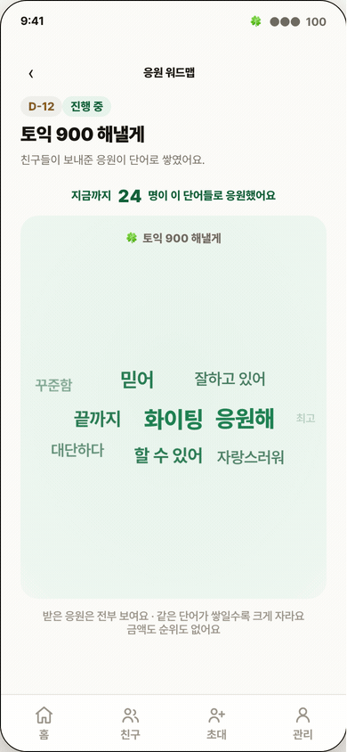
단어 열네 개가 서로 다른 속도·진폭·회전으로 부유
이번 판 변경점
D-027-E 떠다니는 배치 엔진. CSS 줄바꿈은 폭이 모자라면 반드시 줄을 만듭니다. 그 구조를 버리고 단어 실측 크기로 타원 나선 좌표를 계산합니다. 390px 에서 단어 열네 개를 겹침 0 으로 담는 것을 기계로 확인했습니다."한줄로 하지말라고 말했는데 다 씹네 내가 요청한거는 어디 좆박고 그냥 무시하냐?"
면적이 모자라면 세로로 늘립니다. 단어가 더 늘어도 줄로 눕지 않습니다.
빈도 위계의 접근성 교정. 가장 작은 단어 색이 배경 대비 2.0:1 로 본문 하한(4.5:1)에 미달이었습니다. 4.5:1 로 올리고, 빈도 차이는 크기(16/20/26)와 굵기(600/700/800)가 지게 했습니다.
환전
돈이 움직이는 단일 거래. 하단탭 숨김 + 화면 안에 다음 행동(D-025-D).
지난 판 (v2)
이번 개정 (v3)
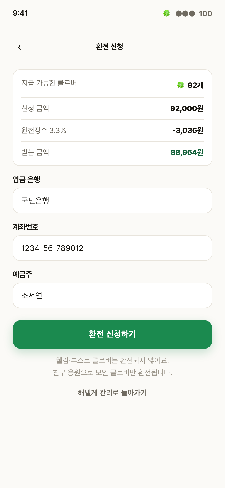
이번 판 변경점
없음. 보드 메모 8번에서 승인하셨고 이번 지적 대상이 아닙니다. 수수료 공식과 A안 환전 잠금은 손대지 않았습니다. 대조를 위해 그대로 싣습니다.